一個讓團隊從 SVN 遷移到 git 時，能看見 git 在做什麼的終端 UI（TUI）
三階段索引 · 本地/遠端 · 分支拓樸 · merge/衝突 · revert —— 用畫面理解，而不是背指令
部署目標：CentOS 7 · 系統 git 1.8.3.1(2013) · 離線 · 無 root · miniconda Py3.9
把 git 的狀態畫成一張儀表板，所有操作都有確認、預覽、與防呆。
分層（每層只做一件事）：
換 git 只需重寫 Backend，上層不動。
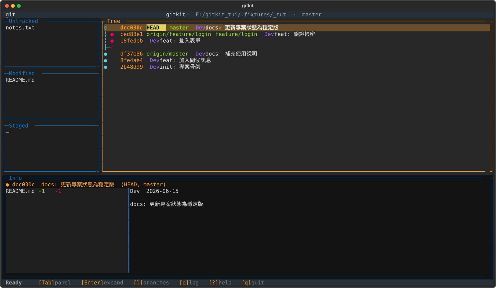
左欄：Untracked / Modified / Staged（三階段索引）
中間 Tree：分支拓樸泳道圖
●│ 實心＝已推到遠端；○╎ 空心/虛線＝本地未推；◆＝merge；HEAD 反白閃爍
下方 Info：選取項目的檔案清單與 diff / commit 訊息
狀態列：常用鍵提示
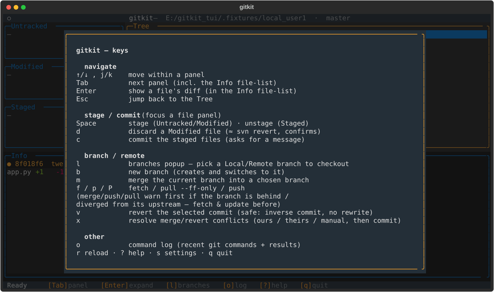
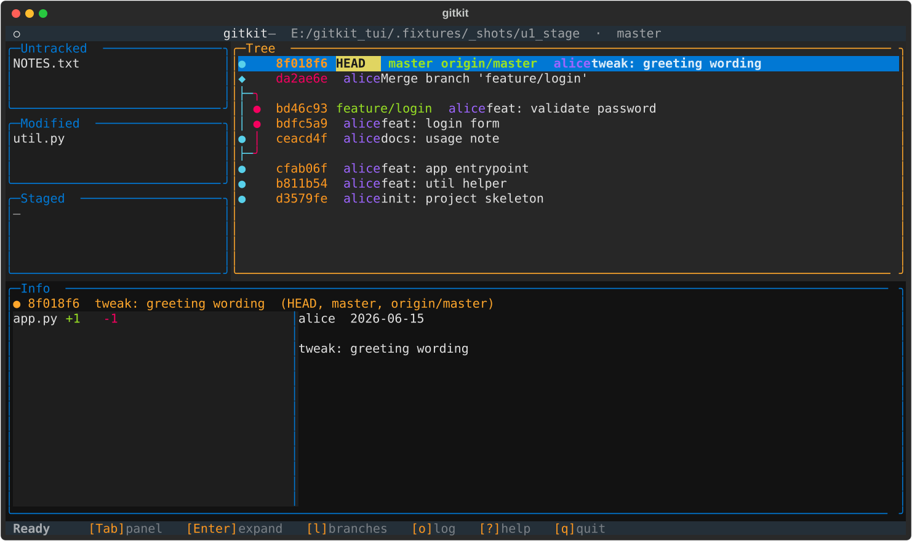
改了 util.py、新增 NOTES.txt 後，左欄立刻分流：
在面板上選檔，下方 Info 顯示該檔 diff。
Space 暫存/取消d 丟棄(≈svn revert)
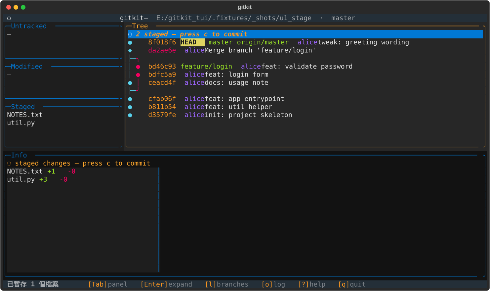
按 Space 後檔案移到 Staged，Tree 頂端出現
◌ N staged 的虛擬節點，提醒「待提交」。
接著按 c 輸入訊息即可 commit。
每個寫入動作都會在 Info 列閃出實際執行的 git 指令。
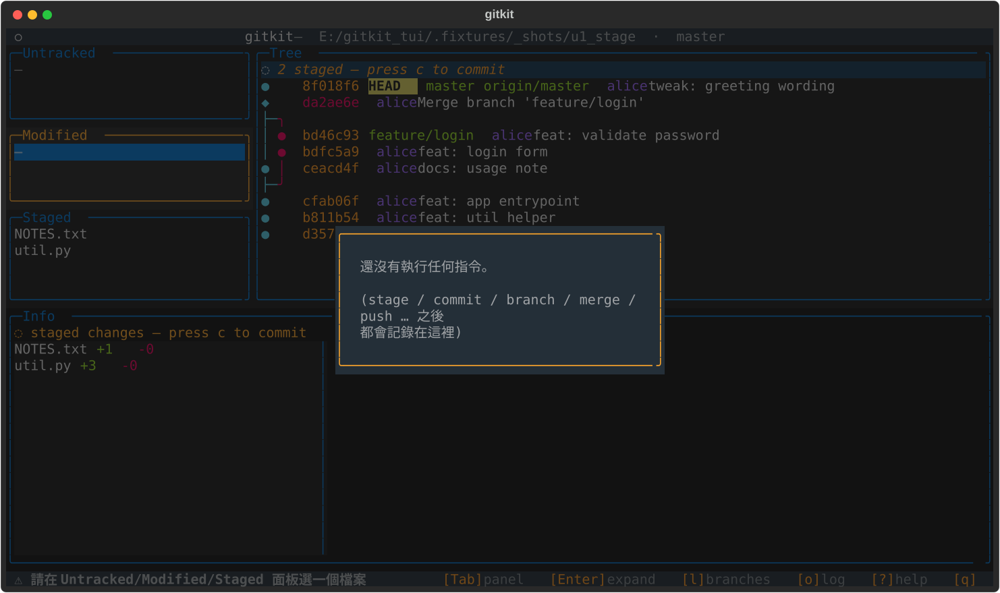
列出最近執行過的 git 指令與結果（最新在上）：
學習者可隨時回顧「剛剛那個動作，背後到底跑了什麼 git」。
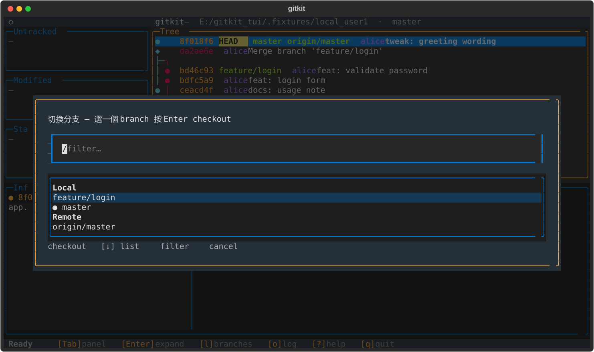
懸浮視窗列出 Local / Remote 分支，可打字即時過濾。
Enter checkout；選到 remote 分支會自動建本地 tracking 分支，不會進 detached。
做成懸浮視窗，長分支名不會擠壓 Tree。
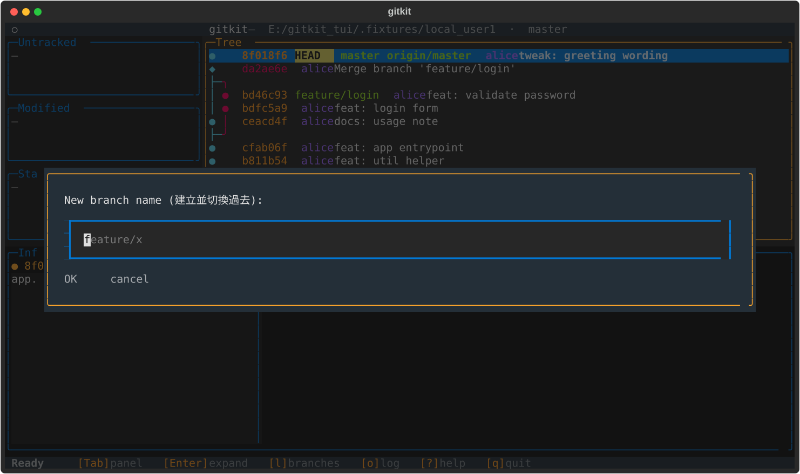
輸入名稱即建立並切換過去（branch + checkout 一步到位）。
若在 detached HEAD 想 commit，工具會先請你建立分支，避免 commit 遺失。
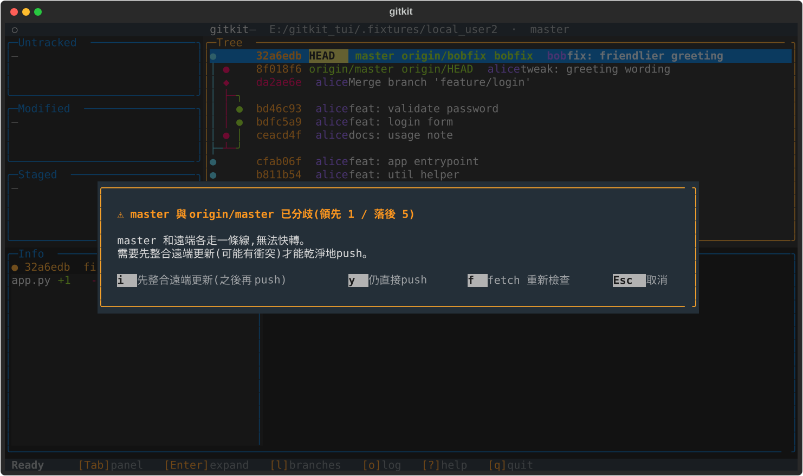
Bob 的 master 與 origin/master 已分歧（領先1/落後5）。
直接 P push 會被遠端拒；工具先攔下來：
merge / push / pull 都有同一套防呆。
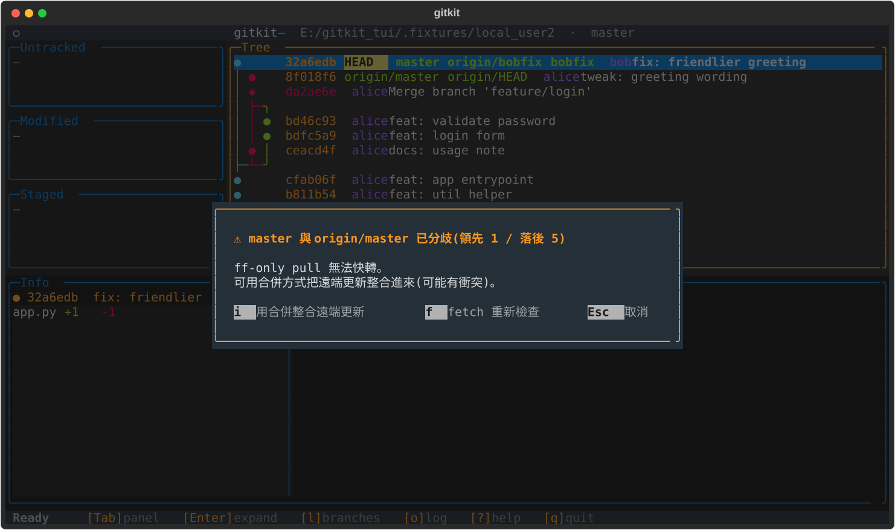
分歧時 pull --ff-only 無法快轉，工具改提供：
f 不自動連線——讓使用者學會「先 fetch 再決定」。
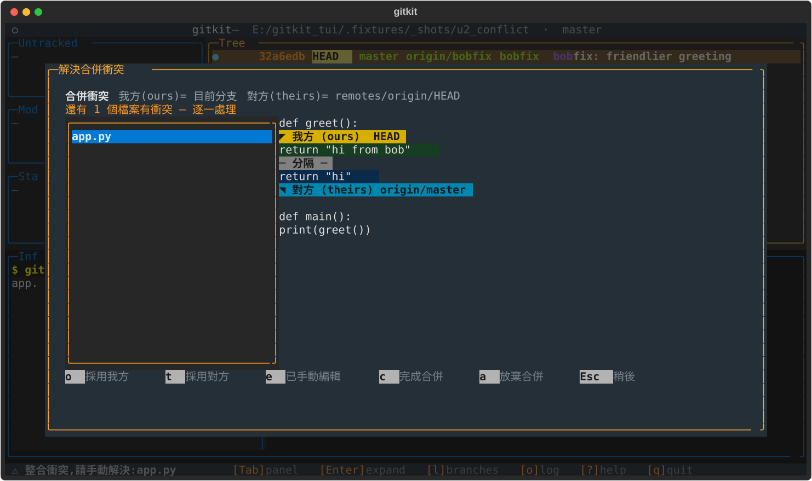
整合撞衝突時自動彈出引導畫面：
<<< === >>>o 採用我方t 採用對方 e 已手動編輯c 完成 a 放棄
同一畫面也用於 revert 衝突（只是換口吻）。
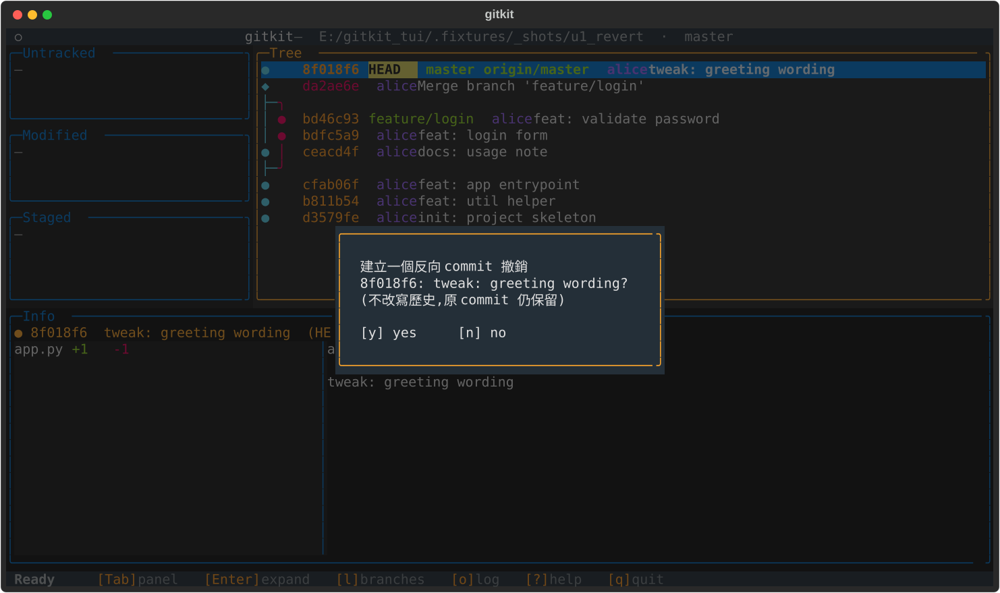
revert ≠ reset：產生一個反向 commit 抵銷舊的，不改寫歷史，可安全推共享分支。
對照 SVN：SVN 的 revert ≈ git 的 checkout -- file；git 的 revert 是另一回事。
可針對 Tree 上任一個 commit，結果疊在目前 HEAD 之上。
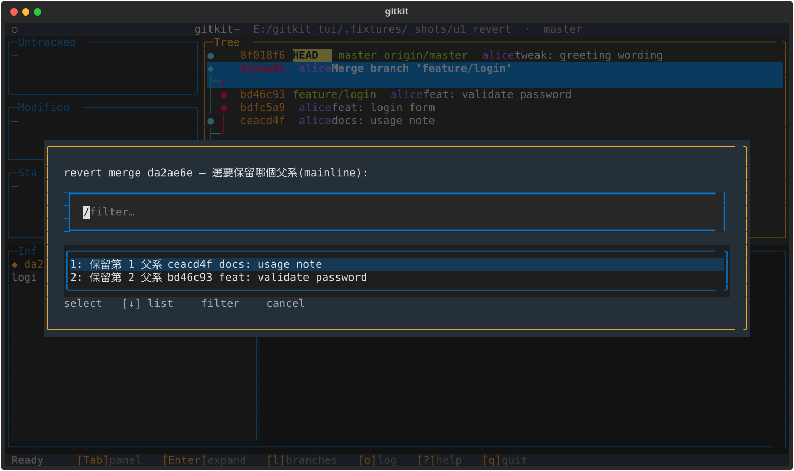
merge commit（◆）有兩個父，git 需要知道保留哪條主線。
工具跳出選單讓你挑 mainline（第 1 / 第 2 父系），並顯示各父 commit，再執行
git revert -m <n>。
若 revert 撞衝突，一樣進上一張的衝突解決畫面。
.fixtures/）本投影片所有畫面來自這組情境：
remote.git — 共用 bare 遠端local_user1（alice）local_user2（bob）用法：python -m gitkit .fixtures/local_user1
劇情（commit / branch / merge / 分歧 / 衝突 / revert）：
masterfeature/login、主線也提交 → 非 ff merge(◆) → 改 greet → pushbobfix 改同一行 greet → 併回 master（未 pull）→ 分歧| 分類 | 鍵 | 動作 |
|---|---|---|
| 導覽 | ↑↓ / j k · Tab | 面板內移動 · 切換面板 |
| Enter · Esc | 展開 diff / 切換 · 返回 Tree | |
| 暫存/提交 | Space · d | 暫存/取消 · 丟棄變更 |
| c | commit（輸入訊息） | |
| 分支/遠端 | l · b · m | 分支清單 · 建立分支 · 合併 |
| f · p · P | fetch · pull · push（皆有落後/分歧防呆） | |
| v · x | revert · 解決 merge/revert 衝突 | |
| 其他 | o · r · ? · s · q | 指令紀錄 · 重載 · 說明 · 設定 · 離開 |
原始碼與架構說明：docs/code-review.md · docs/architecture/layers.md